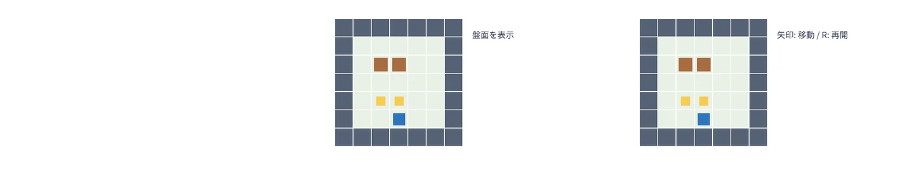
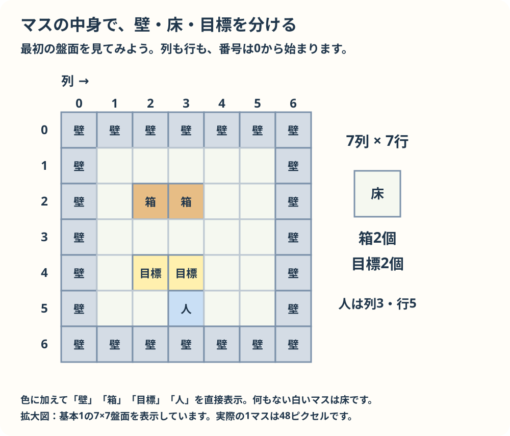
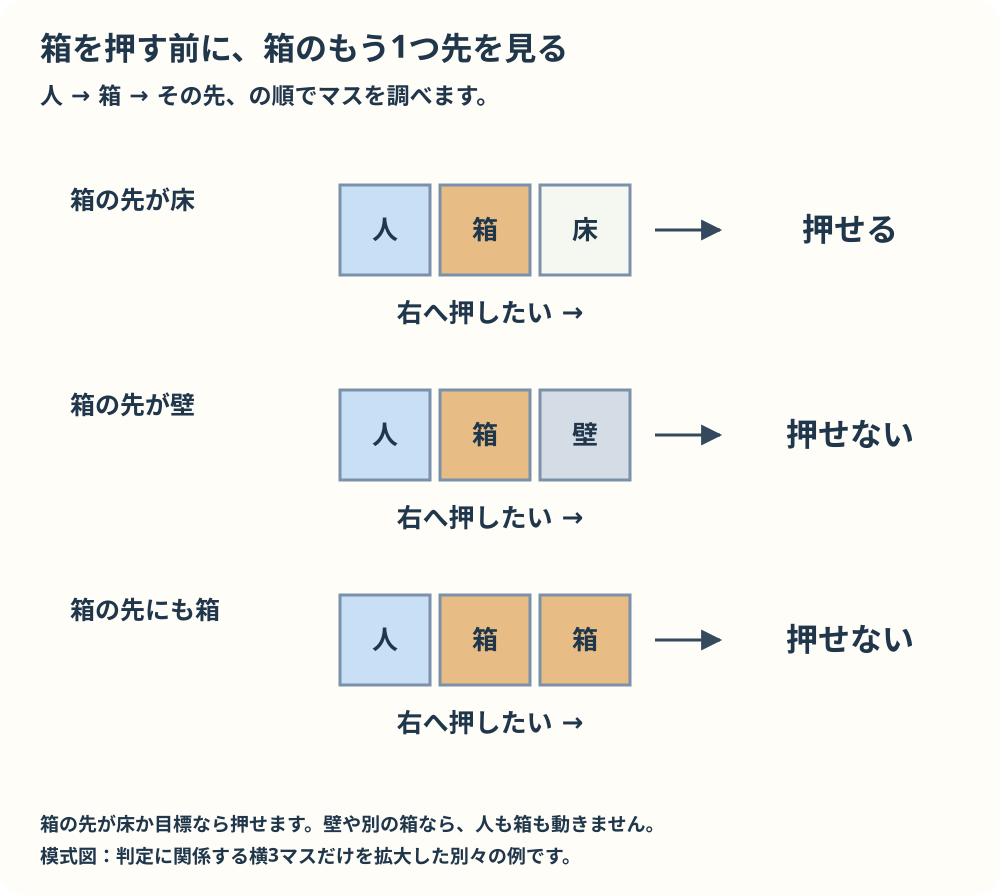

箱押しパズルを作る
始める前に
ZIPを展開してできたフォルダーでindex.htmlを開きます。ZIPにはひな型の3ファイルが入っています。
WindowsでZIPを展開する（動画）
各段階の変更を上から順に加え、保存したら index.html を開くか再読み込みします。
ステップ 1：盤面を描く
このステップの見本を図で見る
1面のx=2〜3、y=2〜4を取り出す
bは箱、gは目標、.は床
b → 茶色の箱、g → 黄色の目標
全体は7×7。人の初期位置は(3,5)
ゲーム画面とコードの前後を見る

このステップの見本
この行を足す前 変わったコードの一例（script.js）
if (cell === "B") { ctx.fillStyle = "#ffffff"; ctx.fillRect(ox + x * size + 20, oy + y * size + 20, 8, 8); }
見本で確かめること
7列7行の盤面に人、箱2個、目標2個が表示されます。
目標
盤面と箱押しの処理を順番に作ります。
確認欄までは準備中です。作業を順に進め、確認欄で保存して動作を確かめます。
書く場所と置き換えるコード
面のデータと状態を用意する
作業用フォルダーの script.js で、次の目印を探し、その直前に書きます。
目印
function start()書き足すコード
const levels = [
["#######", "#.....#", "#.bb..#", "#.....#", "#.gg..#", "#.....#", "#######"],
["#######", "#.....#", "#..bb.#", "#.....#", "#..gg.#", "#.....#", "#######"]
];
let board, player, state, level;
配列は値を順に並べます。levels は2つの面です。# は壁、. は床、b は箱、g はゴールです。board は今の盤面、player は人の位置です。
選んだ面を読み込む
作業用フォルダーの script.js で、次の目印を探し、その直前に書きます。
目印
function start()書き足すコード
function loadLevel() {
board = levels[level].map(row => [...row]);
player = {x: 3, y: 5}; state = "playing";
}
各行を [...row] で文字の配列にコピーします。人を (3, 5) に置き、プレイ中にします。= は右の値を左に入れ、; は文の区切りです。

盤面は7列7行で、壁・床・箱・目標をマスごとに記録しています。列も行も0から数えます。最初の人は列3・行5にいて、箱と目標は2個ずつあります。
基本1の実盤面を拡大し、形の中に名前を書いています。実際の1マスは48ピクセルです。
最初の面から始める
作業用フォルダーの script.js で、次の範囲を探して置き換えます。
置き換える範囲
function start() {
}
function update() {
}
置き換えるコード
function start() {
level = 0;
loadLevel();
}
function update() {
}
面の番号0を選び、loadLevel() を呼びます。
盤面の位置と床を描く
作業用フォルダーの script.js で、次の目印を探し、その直後に書きます。
目印
ctx.clearRect(0, 0, canvas.width, canvas.height);
書き足すコード
const size = 48, ox = 80, oy = 50;
for (let y = 0; y < board.length; y++) for (let x = 0; x < board[y].length; x++) {
const cell = board[y][x];
ctx.fillStyle = cell === "#" ? "#566375" : "#e9f1e6";
ctx.fillRect(ox + x * size, oy + y * size, size - 2, size - 2);
}
ctx はひな型の描画の道具です。左上を (80, 50)、間隔を48にし、壁と床を色分けします。各四角の幅と高さは46です。
ゴールと箱を描く
作業用フォルダーの script.js で、次の目印を探し、その直後に書きます。
目印
ctx.fillRect(ox + x * size, oy + y * size, size - 2, size - 2);
書き足すコード
if (cell === "g" || cell === "B") { ctx.fillStyle = "#f6cc50"; ctx.fillRect(ox + x * size + 12, oy + y * size + 12, 24, 24); }
if (cell === "b" || cell === "B") {
ctx.fillStyle = cell === "B" ? "#5d8a54" : "#a76c3f"; ctx.fillRect(ox + x * size + 6, oy + y * size + 6, 36, 36);
if (cell === "B") { ctx.fillStyle = "#ffffff"; ctx.fillRect(ox + x * size + 20, oy + y * size + 20, 8, 8); }
}
g または B ならゴールを描きます。b と B は箱で、B はゴール上の箱なので色と白い印を変えます。
人と案内を描く
作業用フォルダーの script.js で、次の範囲を探して置き換えます。
置き換える範囲
}
}
function gameLoop()置き換えるコード
}
ctx.fillStyle = "#3074bb"; ctx.fillRect(ox + player.x * size + 8, oy + player.y * size + 8, 32, 32);
ctx.fillStyle = "#26334a"; ctx.font = "22px sans-serif";
ctx.fillText("盤面を表示", 440, 100);
}
function gameLoop()人の位置に青い四角を描き、盤面の案内を表示します。font は文字の大きさと書体です。
保存後の確かめ方
保存してゲーム画面を更新する（動画）
index.html を再読み込みします。7列7行の盤面に人、箱2個、目標2個が表示されます。 この段階の見本を開く
小さな練習
マップの壁の位置を変えて比べます。 練習後はコードを元に戻してください。
ステップ 2：壁と移動を作る
このステップの見本を図で見る
行き先 "." → player.x += 1
左端から中央の床へ移動
行き先 "#" → return
人は左端にとどまる
行き先 "b" → return
この段階では箱を押す機能はまだない
ゲーム画面とコードの前後を見る
このステップの見本
この行を足す前 変わったコードの一例（script.js）
const [dx, dy] = moves[key], nx = player.x + dx, ny = player.y + dy;
見本で確かめること
矢印で人を動かし、壁と箱には入れないことを確かめます。
目標
盤面と箱押しの処理を順番に作ります。
確認欄までは準備中です。作業を順に進め、確認欄で保存して動作を確かめます。
書く場所と置き換えるコード
操作を案内する
作業用フォルダーの script.js で、次の範囲を探して置き換えます。
置き換える範囲
ctx.fillText("盤面を表示", 440, 100);
置き換えるコード
ctx.fillText("矢印: 移動 / R: 再開", 440, 100);
矢印で移動し、R で再開できることを表示します。
キーを受け取る準備をする
作業用フォルダーの script.js で、次の範囲を探して置き換えます。
置き換える範囲
function gameLoop()置き換えるコード
window.addEventListener("keydown", event => {
});
function gameLoop()keydown はキーを押したときに起きます。
押しっぱなしを除いて再開する
作業用フォルダーの script.js で、次の目印を探し、その直後に書きます。
目印
window.addEventListener("keydown", event => {
書き足すコード
if (event.repeat) return;
const key = event.key.toLowerCase();
if (key === "r") { start(); return; }
if (state !== "playing") return;
繰り返し入力を除き、R を押したら start() で最初の面から始めます。終了後は移動しません。
矢印から移動先を決める
作業用フォルダーの script.js で、次の目印を探し、その直後に書きます。
目印
if (event.repeat) return;
const key = event.key.toLowerCase();
if (key === "r") { start(); return; }
if (state !== "playing") return;
書き足すコード
const moves = {arrowleft: [-1, 0], arrowright: [1, 0], arrowup: [0, -1], arrowdown: [0, 1]};
if (!moves[key]) return;
event.preventDefault();
const [dx, dy] = moves[key], nx = player.x + dx, ny = player.y + dy;
矢印ごとの横・縦の差を moves に用意し、キーに対応する差を現在位置に足します。
壁と箱を避けて移動する
作業用フォルダーの script.js で、次の目印を探し、その直後に書きます。
目印
const moves = {arrowleft: [-1, 0], arrowright: [1, 0], arrowup: [0, -1], arrowdown: [0, 1]};
if (!moves[key]) return;
event.preventDefault();
const [dx, dy] = moves[key], nx = player.x + dx, ny = player.y + dy;
書き足すコード
const cell = board[ny][nx];
if (cell === "#") return;
if (cell === "b" || cell === "B") return;
player = {x: nx, y: ny};
移動先が壁や箱なら処理を終え、それ以外は人を移動先に置きます。
保存後の確かめ方
矢印で人を動かし、壁と箱には入れないことを確かめます。 この段階の見本を開く
小さな練習
マップの壁の位置を変えて比べます。 練習後はコードを元に戻してください。
ステップ 3：箱を押す
このステップの見本を図で見る
[人,箱,床] → next === "." → 押す
箱を右へ動かし、人も進む
[人,箱,壁] → next === "#" → return
箱も人も動かない
[人,箱,箱] → next === "b" → return
箱を2個まとめては押せない
ゲーム画面とコードの前後を見る
このステップの見本
if (cell === "b" || cell === "B") return;
変わったコードの一例（script.js）if (cell === "b" || cell === "B") {
見本で確かめること
箱の先が空いていれば押せ、壁や箱なら押せません。
目標
盤面と箱押しの処理を順番に作ります。
確認欄までは準備中です。作業を順に進め、確認欄で保存して動作を確かめます。
書く場所と置き換えるコード
箱を押す
作業用フォルダーの script.js で、次の範囲を探して置き換えます。
置き換える範囲
if (cell === "b" || cell === "B") return;
置き換えるコード
if (cell === "b" || cell === "B") {
const next = board[ny + dy][nx + dx];
if (next !== "." && next !== "g") return;
board[ny + dy][nx + dx] = next === "g" ? "B" : "b";
board[ny][nx] = cell === "B" ? "g" : ".";
}
移動先に箱があれば、その先が床かゴールかを調べます。ゴールに押した箱は B、床なら b にします。元の位置はゴールなら g、それ以外は床に戻します。

人の隣に箱があったら、その箱のもう1つ先を調べます。先が床か目標なら、箱を押せます。壁や別の箱なら、人も箱も動かしません。
判定に関係する3マスだけを取り出した別々の例です。初期配置の再現ではなく、step3の押せる条件を説明しています。
保存後の確かめ方
箱の先が空いていれば押せ、壁や箱なら押せません。 この段階の見本を開く
小さな練習
マップの壁の位置を変えて比べます。 練習後はコードを元に戻してください。
ステップ 4：目標を判定する
このステップの見本を図で見る
board.some(row => row.includes("b")) = true
未到達のbがあるので続行
!board.some(row => row.includes("b")) = true
stateがclearになり移動停止
ゲーム画面とコードの前後を見る
このステップの見本
この行を足す前 変わったコードの一例（script.js）
if (!board.some(row => row.includes("b"))) state = "clear";
見本で確かめること
2個の箱を目標へ置くと移動が止まります。
目標
盤面と箱押しの処理を順番に作ります。
確認欄までは準備中です。作業を順に進め、確認欄で保存して動作を確かめます。
書く場所と置き換えるコード
すべての箱を置いたか調べる
作業用フォルダーの script.js で、次の目印を探し、その直後に書きます。
目印
player = {x: nx, y: ny};
書き足すコード
if (!board.some(row => row.includes("b"))) state = "clear";
どの行にもゴール外の箱 b がなければ "clear" にします。
保存後の確かめ方
2個の箱を目標へ置くと移動が止まります。 この段階の見本を開く
小さな練習
マップの壁の位置を変えて比べます。 練習後はコードを元に戻してください。
ステップ 5：クリアを表示する
このステップの見本を図で見る
state === "clear" → クリア文字を描く
箱2個を置き終えたことが分かる
start() → loadLevel()
人は(3,5)、箱は(2,2)・(3,2)へ戻る
ゲーム画面とコードの前後を見る
このステップの見本
この行を足す前 変わったコードの一例（script.js）
if (state === "clear") ctx.fillText("クリア！ 箱を全部置いた", 440, 240);
見本で確かめること
箱を2個とも目標に置くとクリアと表示され、Rで戻ります。
目標
盤面と箱押しの処理を順番に作ります。
確認欄までは準備中です。作業を順に進め、確認欄で保存して動作を確かめます。
書く場所と置き換えるコード
クリアを表示する
作業用フォルダーの script.js で、次の目印を探し、その直後に書きます。
目印
ctx.fillText("矢印: 移動 / R: 再開", 440, 100);
書き足すコード
if (state === "clear") ctx.fillText("クリア！ 箱を全部置いた", 440, 240);
すべての箱を置いたらクリアの文字を表示します。
保存後の確かめ方
箱を2個とも目標に置くとクリアと表示され、Rで戻ります。 この段階の見本を開く
小さな練習
マップの壁の位置を変えて比べます。 練習後はコードを元に戻してください。